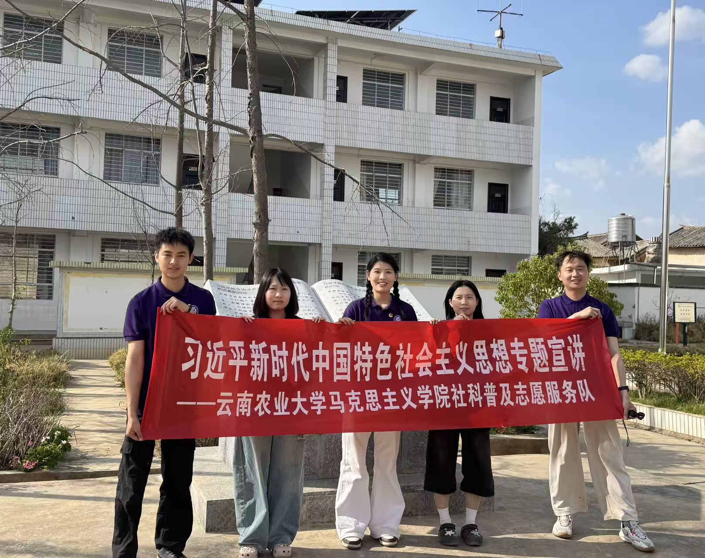
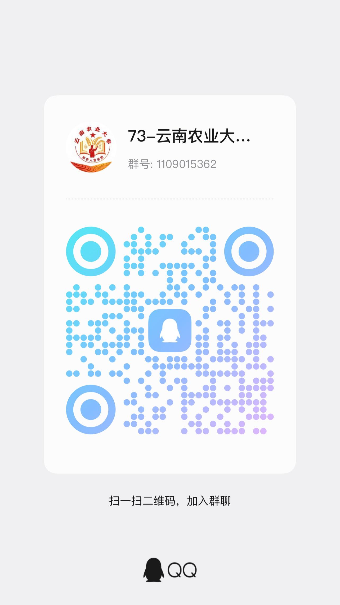

宣讲实践部
负责宣讲队员招募、口才培训，落地校内下乡宣讲，统筹现场主持、实地宣讲全流程实践。

知农爱农
扎根红土大地
讲好新农人故事
云南农业大学新农人宣讲团是立足本校农科办学特色、以思政宣讲为载体的学生思想引领类社团。
社团以“知农爱农、强农兴农”为核心宗旨，组织青年学子扎根云南红土大地，围绕乡村振兴、三农发展、惠农政策、青年使命等主题开展系列宣讲实践活动。
社团内设宣讲实践、文稿采编、新媒体宣传、秘书、策划后勤、外联发展六大职能部门，分工协作完成稿件创作、宣讲实训、活动策划、影像摄制、财务内务、对外实践对接等工作。团队定期在校内开展主题宣讲课堂，深入周边村镇、田间地头开展下乡实践宣讲，并通过短视频、公众号线上传播兴农故事。
社团致力于搭建理论学习与基层实践相结合的成长平台，引导农科学子走出课堂，把专业知识与基层实情相结合，用青年话语讲好云南新农人奋斗故事。社团持续对接乡村基层和学院平台搭建实践阵地，提升社员宣讲表达、文字创作、社会实践等综合能力，激励青年学子投身乡村建设，以青春力量助力高原特色农业高质量发展。
协同共建
六大部门分工协作，共建宣讲实践阵地
负责宣讲队员招募、口才培训，落地校内下乡宣讲，统筹现场主持、实地宣讲全流程实践。
撰写思政宣讲稿件、乡村振兴纪实文案，收集整理乡土案例，为宣讲提供文字素材支撑。
运营社团线上平台，开展海报与标志设计，负责活动拍摄、视频剪辑、图文推送与对外形象宣传。
管理社员档案、会议考勤、社团文书台账，统筹经费登记、收支核算，完成财务报备工作。
策划宣讲主题活动、农耕研学实践，申请场地物资，统筹活动现场后勤与物资保管调度。
对接学院、村镇基层、兄弟社团，共建实践基地，洽谈活动合作，拓展宣讲实践外部资源。
宣讲足迹
从校园课堂到田间地头，记录宣讲路上的青春身影
实践纪实
红色宣讲、党史进校园、下乡实践、科普宣讲
社团宣讲队员前往王德三故居开展红色实践宣讲，面向在校青年学生讲述革命先辈奋斗故事，融合红色精神与兴农使命，录制宣讲短视频，厚植学子知农爱国情怀。
社团宣讲队员走进昆明市中小学，讲述云南革命先辈事迹，用少年易懂的语言传递红色精神，开展互动问答，引导青少年厚植爱国情怀。
社团宣讲员在科技馆面向青少年开展宣讲，结合大屏数据讲解我国经济发展与小康建设成就，搭配科普展品互动，引导青少年感悟国家发展、树立强国理想。
宣讲团走进祥云县夏庄镇开展基层实践宣讲，面向村镇群众宣传惠农政策，调研乡村发展现状，结合农科学子专业特长，传递乡村振兴发展理念。
